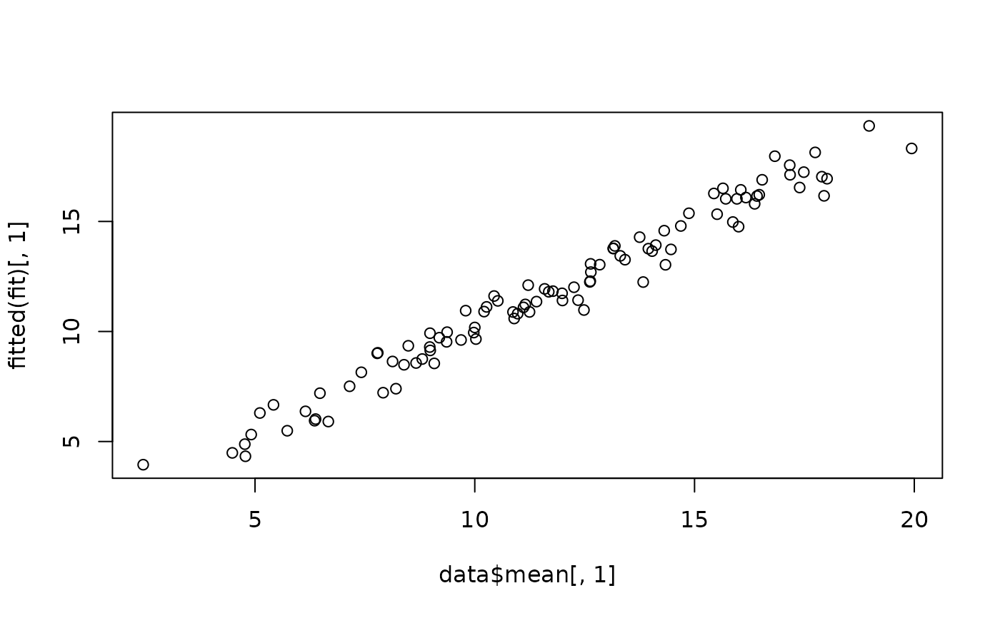

Fits the multivariate BART model used for the responses in missBART1()
and missBART2() to data without missing responses.
Usage
mvBART(
x,
y,
x_predict = NULL,
n_trees = 100,
burn = 1000,
iters = 1000,
thin = 2,
predict = TRUE,
tree_prior_params = tree_list(...),
hypers = hypers_list(...),
scale = TRUE,
show_progress = TRUE,
progress_every = 10,
save_y_pred = TRUE,
...
)Arguments
- x
numeric matrix (or data frame) of covariates. Missing covariate values are allowed in
missBART2()andmvBART(), where they are handled inside the trees;missBART1()needs complete covariates.- y
numeric matrix (or vector) of responses without missing values.
- x_predict
optional covariates at which to make out-of-sample predictions.
- n_trees
number of trees.
- burn
number of burn-in iterations.
- iters
number of posterior samples kept after burn-in and thinning.
- thin
thinning interval. The sampler runs
burn + thin * itersiterations.- predict
logical. Make predictions at
x_predict?- tree_prior_params
tree prior and proposal settings, see
tree_list().- hypers
hyperparameters of the BART model for the responses, see
hypers_list().- scale
logical. Scale each response to
[-0.5, 0.5]before fitting?missBART1()then also scales the covariates, soB_postrefers to the scaled variables. Everything else is returned on the original scale.- show_progress
logical. Print the iteration count?
- progress_every
how often to update the iteration count.
- save_y_pred
logical. Keep posterior predictive draws for the training data (
y_pred)?- ...
further arguments passed to
tree_list()andhypers_list(). Arguments of earlier versions that are no longer used are ignored.
Value
An object of class "missBART", see missBART1().
Examples
set.seed(1)
data <- sim_data_friedman(n = 100, p = 2)
fit <- mvBART(data$x, data$y, n_trees = 20, burn = 100, iters = 100,
thin = 1, show_progress = FALSE)
plot(data$mean[, 1], fitted(fit)[, 1])
